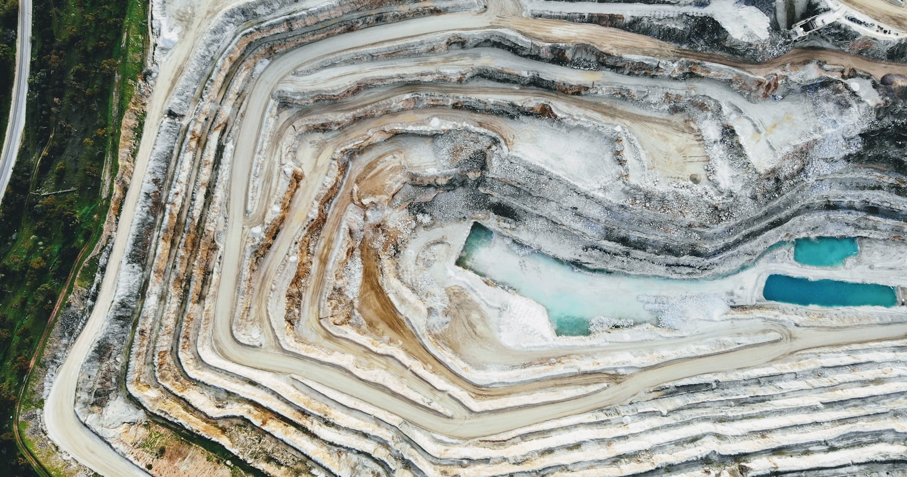
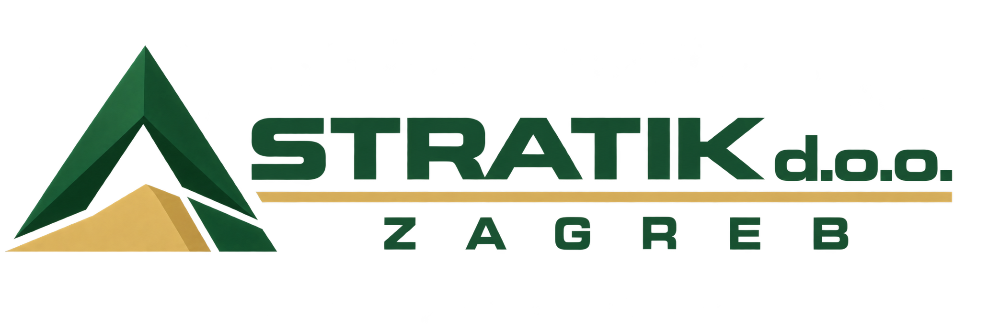

01
Dokumentacija za istraživanje
Dobro planiranje počinje razumijevanjem lokacije i podataka koje tek treba prikupiti.
- Analiza geološke građe
- Planiranje istražnih radova
- Podloge za istraživanje mineralnih sirovina

Stratik d.o.o. / Zagreb
Od prvog istraživanja do rudarskog projekta. Povezujemo podatke o terenu s jasnim, pouzdanim tehničkim rješenjima.
Razumjeti teren.
Projektirati odgovorno.
01 Stručne usluge
Projektna dokumentacija, podrška investitorima i koncesionarima.
Dobro planiranje počinje razumijevanjem lokacije i podataka koje tek treba prikupiti.
Tehnički izvediva rješenja za istraživanje, eksploataciju i završno uređenje prostora.
Jasna i provjerljiva osnova za utvrđivanje količine i kakvoće mineralne sirovine.
Terenske podatke povezujemo u geološki model koji daje smisao sljedećoj odluci.
Inženjersko-geološka podrška pri izvođenju infrastrukturnih zahvata.
Razumljiv pregled tehničkih zahtjeva i stručna podrška kroz povezane postupke.
Niste sigurni koja vam je dokumentacija potrebna?
02 Područje rada
Od prvog pregleda podataka do završne dokumentacije, znate gdje ste i što slijedi.
Razgovarajmo o vašem projektuPregledavamo postojeće podatke, ranije elaborate, karte, dozvole i rezultate istražnih radova.
Polazište: razumijevanje dostupnih podatakaUtvrđujemo što je poznato, koji podaci nedostaju i koje aktivnosti treba planirati za nastavak projekta.
Polazište: jasan redoslijed sljedećih korakaGeološke i rudarske podatke sistematiziramo, obrađujemo i povezujemo u stručnu cjelinu.
Polazište: provjerljiva stručna osnovaIzrađujemo elaborat, rudarski projekt ili stručnu podlogu u skladu sa zahtjevima projekta, propisima i pravilima struke.
Polazište: precizna i jasno strukturirana dokumentacijaPo potrebi pripremamo pojašnjenja i dopune te pružamo tehničku podršku tijekom pregleda dokumentacije.
Polazište: stručna podrška kroz postupak03 O nama

Stratik je tvrtka specijalizirana za rudarstvo, geologiju i dokumentaciju za mineralne sirovine. Spajamo razumijevanje terena s tehničkim znanjem i jasnom komunikacijom.
Naš je cilj pripremiti stručnu podlogu koja je provjerljiva, razumljiva i praktično korisna u stvarnom postupku.
04 Započnimo razgovor
Recite nam nešto o lokaciji, mineralnoj sirovini i fazi projekta. Zajedno ćemo odrediti što je potrebno.